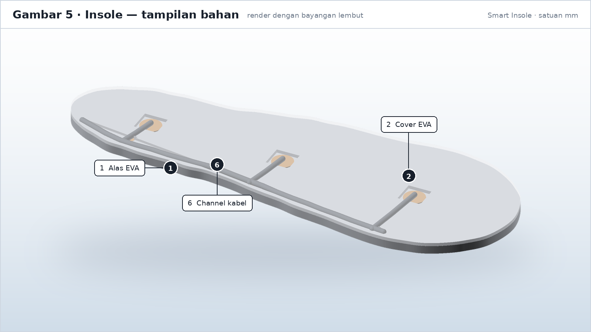
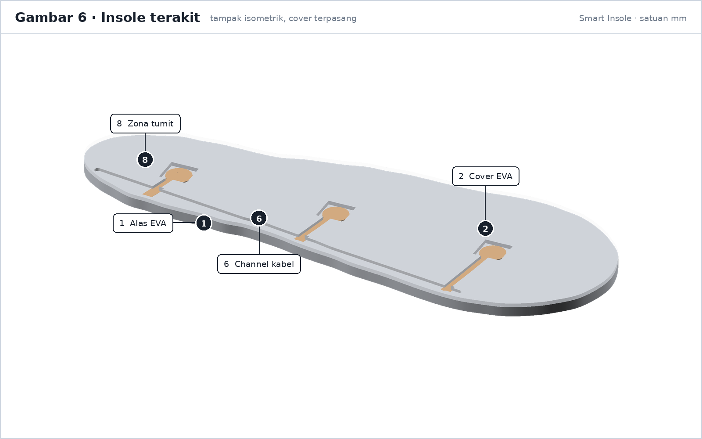
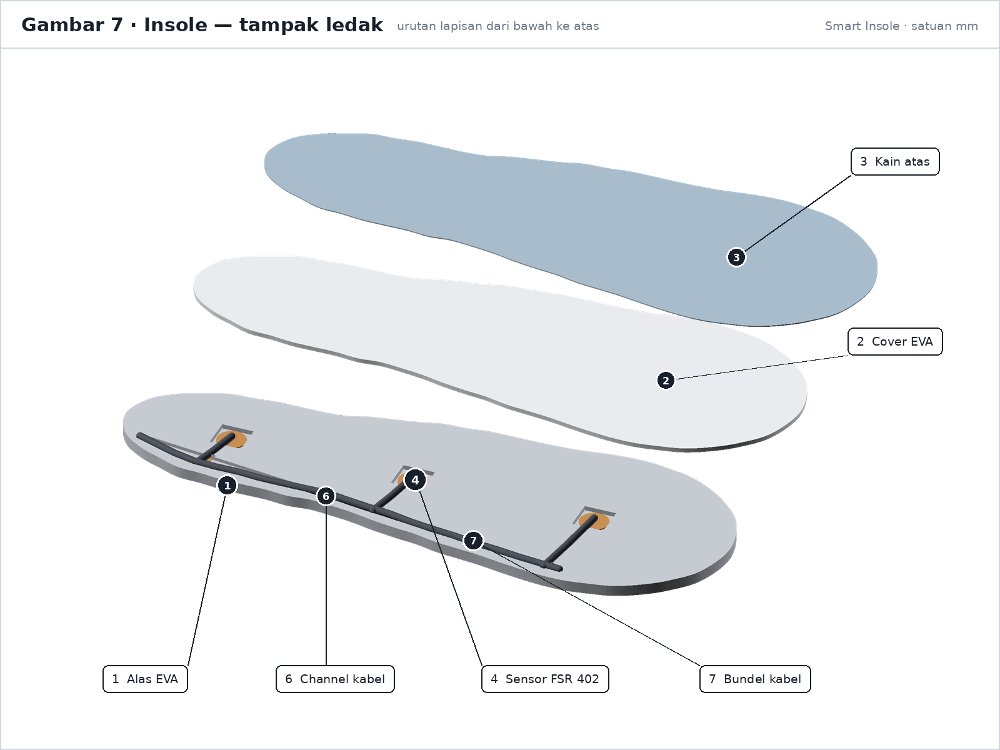
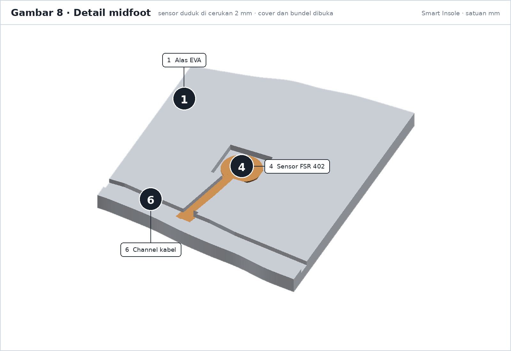
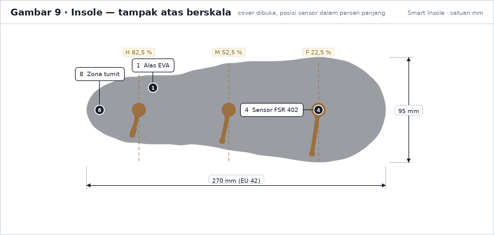
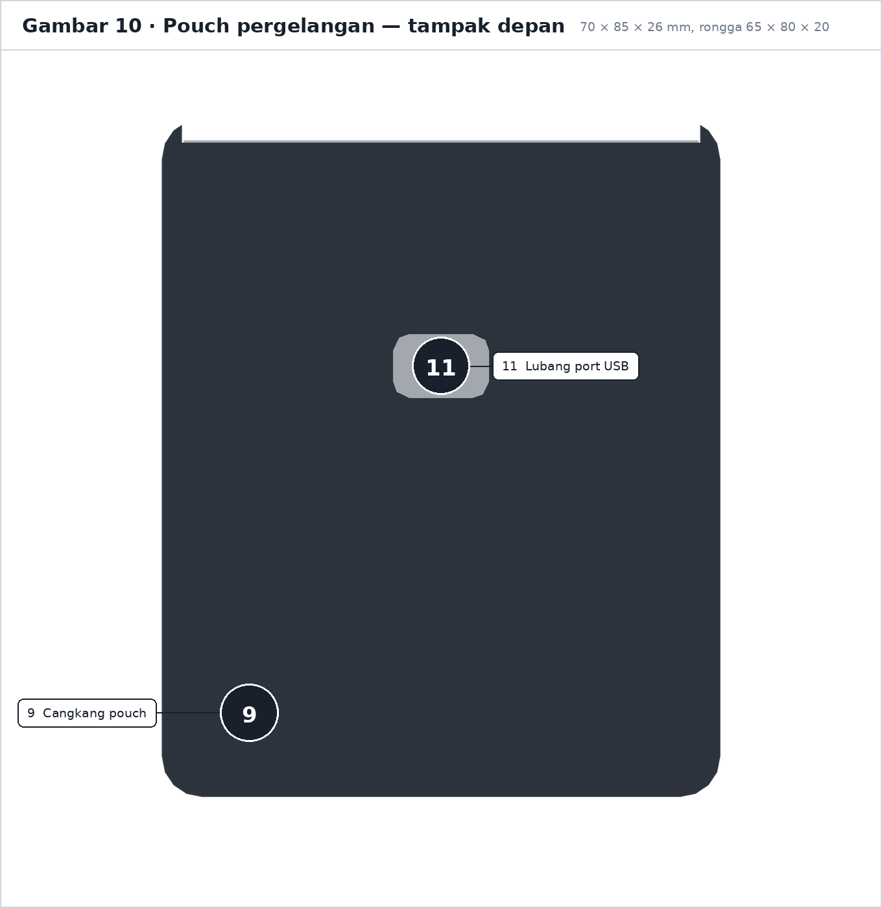
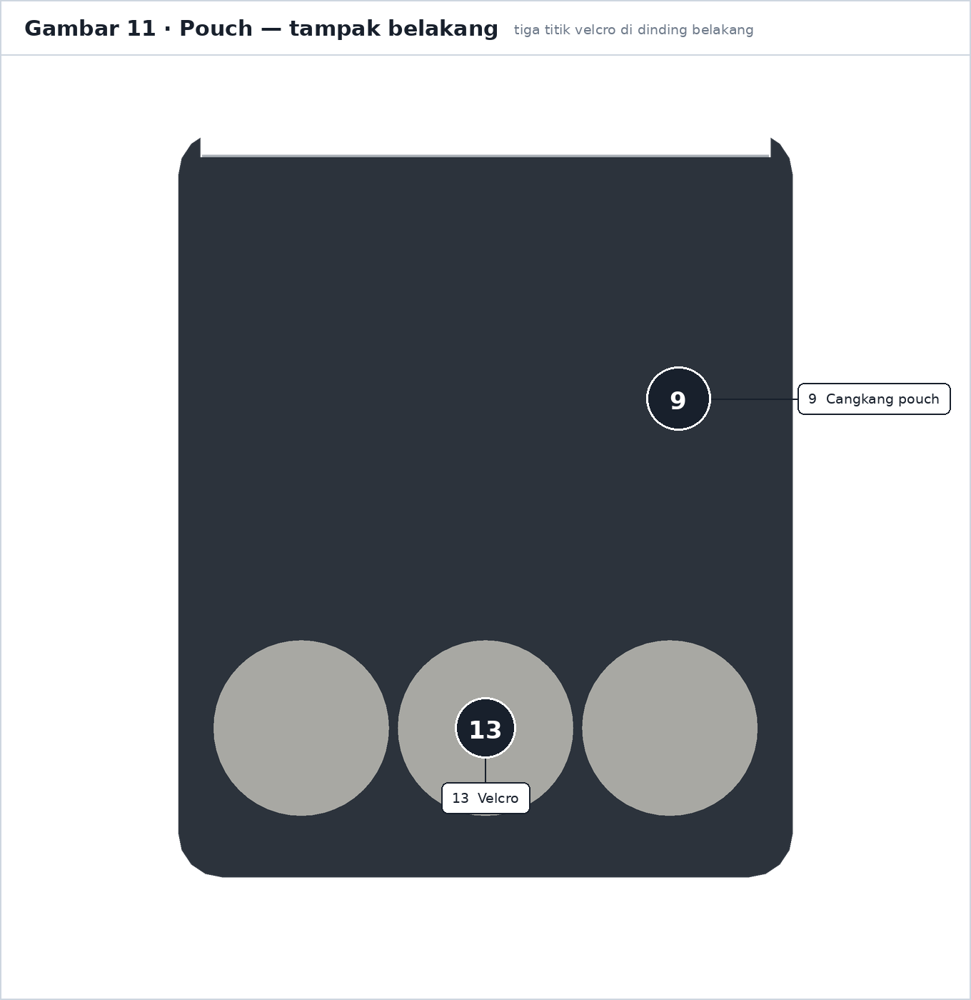
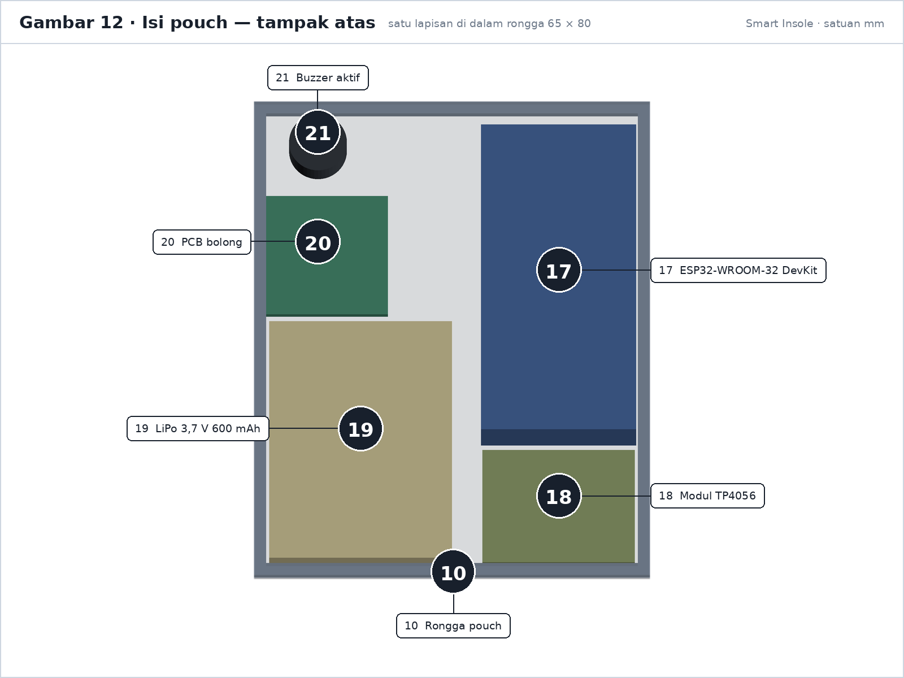
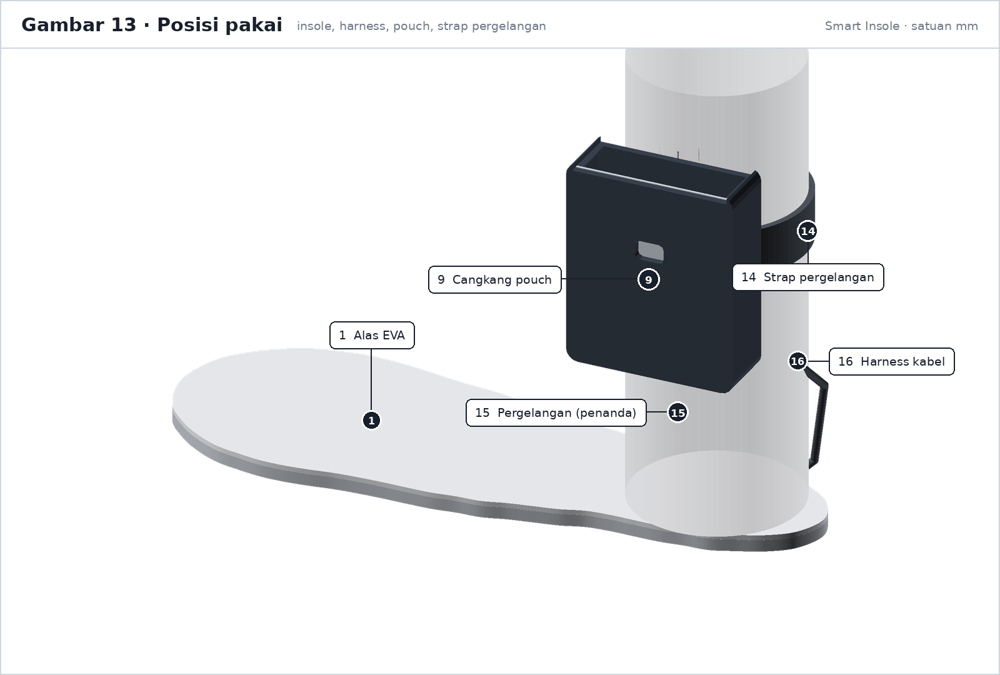
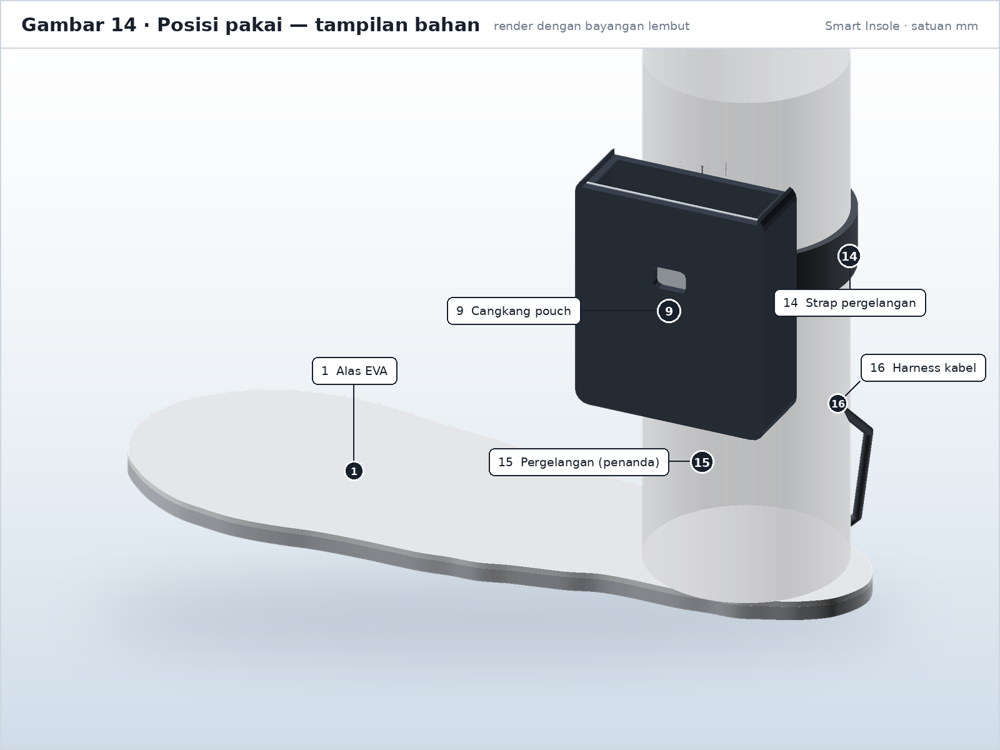

Bangun hardware smart insole dari nol
Dari memilih FSR, memotong EVA, menyolder 6 sensor, menjahit pouch pergelangan, sampai mengelem cover dan mengalibrasi ADC. Urutannya penting: setiap tahap punya gerbang uji, dan tidak ada komponen yang boleh ditanam sebelum gerbang sebelumnya lolos.
Ringkasan & prinsip desain
Sistem terdiri dari insole berisi tiga sensor tekanan, kotak (pouch) di pergelangan kaki yang menampung ESP32 dan baterai, serta kabel 6 inti yang menghubungkan keduanya. ESP32 membaca ADC, menjalankan Random Forest, membunyikan buzzer lokal, lalu mengirim satu paket per detik ke Firebase.
Empat aturan yang tidak boleh dilanggar
- Area tumit hanya foam dan sensor. Tidak ada baterai, tidak ada board, tidak ada sambungan keras. Heel strike menerima 1,5–2× berat badan; komponen keras di sana berisiko cedera pada pasien neuropati.
- Pouch di pergelangan kaki, bukan di tumit. Mengikuti Billings et al. (2024) dan alasan klinis yang sama.
- Uji elektronik sebelum ditanam. Setelah cover EVA dilem, sensor tidak bisa diperbaiki tanpa merusak insole.
- Jangan menaruh kabel di jalur tumpu. Kabel melewati sisi medial, keluar di tumit, lalu naik ke pouch.
Insole memakai 3 sensor per kaki, sedangkan model
dilatih dari 8 sensor per kaki yang diagregasi.
Resolusi midfoot karena itu hanya tiga titik ukur, dan
ambang klinis 200 kPa praktis tidak pernah tercapai pada data
acuan. Ini batasan desain, bukan kesalahan perakitan, dan sudah
dicatat di docs/thesis-methodology.md §3.8–3.9.
Enam gerbang pengerjaan
Daftar bahan & alat
Jumlah di bawah adalah untuk satu pasang (kiri dan kanan). Harga adalah rentang pasar lokal, bukan patokan.
Elektronik
| Komponen | Qty | Spesifikasi & Penjelasan Praktis |
|---|---|---|
| FSR 402 (Interlink) | 6 | Sensor tekanan bulat tipis (3 per kaki). Area aktif bulat 12,7 mm, tebal 0,5 mm. Memiliki 2 pin/kaki logam di ekornya. |
| Resistor 10 kΩ, 1/4 W | 6 | Resistor pembagi tegangan (3 per kaki), dipasang di pouch pergelangan dekat ESP32. Beli 10 untuk cadangan. |
| ESP32-WROOM-32 DevKit | 2 | Mikrokontroler utama dengan modul Wi-Fi (1 unit per kaki). |
| Buzzer aktif 3,3–5 V | 2 | Wajib: modul buzzer aktif (bunyi otomatis saat diberi tegangan HIGH di GPIO 27). |
| LiPo 3,7 V 600 mAh, JST-PH | 2 | Baterai lithium polymer rechargeable 1 cell (1 per kaki). Dilengkapi soket JST-PH 2 pin. Alternatif: 1000 mAh. |
| TP4056 dengan proteksi | 2 | Modul charger baterai micro USB / USB-C ber-chip DW01 + 8205A (ada pin B+, B-, OUT+, OUT-). |
| Konektor JST-PH 2-pin | 4 | Dua pasang kabel soket male-female untuk jalur baterai ke charger dan ESP32 agar mudah dicopot. |
| Kabel silikon lentur 30 AWG | 5 m | Kabel serabut silikon fleksibel (lemas/tahan tekukan). Butuh 6 helai kabel per kaki (panjang ±35 cm per helai). |
| Heat shrink (pipa bakar) 1,5–2 mm | 1 set | Selongsong karet bakar untuk membungkus isolasi sambungan solder kaki FSR agar tidak korslet. |
| Kapasitor 100 nF (opsional) | 6 | Kapasitor keramik untuk menyaring noise di pin ADC jika pembacaan sensor fluktuatif. |
| Header female 0,1" (opsional) | 2 | Dudukan pin ESP32 agar modul ESP32 bisa dicopot-pasang dari pouch tanpa membongkar solderan. |
docs/HARDWARE-SPEC.md memetakan buzzer ke GPIO 27, tapi
daftar belanjanya belum memuat buzzer. Firmware saat ini memanggil
PIN_BUZZER 27, jadi tanpa komponen ini alarm lokal
tidak berbunyi.
Bahan insole & pouch
| Bahan | Qty | Spesifikasi & Fungsi |
|---|---|---|
| EVA foam (busa ati) 5 mm | 2 lembar | Ukuran 30 × 30 cm, densitas sedang (30–40 PPI). Dipakai sebagai lapisan alas dasar insole yang dipotong sesuai bentuk sepatu. |
| EVA foam (busa ati) 2 mm | 1 lembar | Ukuran 30 × 30 cm. Dipakai sebagai penutup atas (cover) di atas sensor FSR dan jalur kabel. |
| Kain neoprene / rubber sheet 3–5 mm | 1 lembar | Ukuran 30 × 30 cm (bahan lentur seperti baju selam/tas laptop empuk). Dipotong dan dijahit/dilem menjadi kantong (pouch) di pergelangan kaki. |
| Velcro (perekat kretek-kretek) | 1 pak | Bisa berupa velcro dots atau pita velcro lebar 2–3 cm untuk memasang pouch ke kaus kaki atau strap pergelangan. |
| Kain pelapis atas (opsional) | 0,5 m | Kain breathable lembut (nylon/polyester/dry-fit) di bagian paling atas insole agar telapak kaki tidak berkeringat langsung menyentuh busa EVA. |
| Lem kuning kontak (Fox/Aica Aibon) atau B-7000 | 1 tube | Untuk merekatkan lapisan EVA dan bahan pouch neoprene. Hindari lem alteco/cyanoacrylate langsung ke sensor. |
| Lem tembak (hot glue) | 1 set | Hanya untuk pengunci/penahan kabel (strain relief) di pangkal keluaran insole, bukan untuk menempel sensor FSR. |
| Double-sided tape tipis (3M) | 1 roll | Untuk menahan kabel silikon di parit alur (channel) sebelum ditutup busa cover. |
Alat
Wajib
- Soldering iron 30–60 W, ujung runcing
- Timah 0,8 mm (lead-free lebih aman)
- Flux / pasta solder
- Multimeter dengan mode kontinuitas
- Tang potong, pengupas kabel 30 AWG
- Cutter tajam + gunting
- Penggaris baja, spidol
- Pinset
- Kabel USB data (bukan charge-only)
Sangat membantu
- Helping hands / third hand
- Hot glue gun
- Amplas 120 dan 240
- Jarum + benang nylon (versi jahit)
- Oven/microwave kecil untuk memanaskan EVA (opsional)
- Timbangan dapur + beban 1 kg / 5 kg untuk kalibrasi
- Pelat datar kecil 3 × 3 cm untuk menekan sensor saat kalibrasi
FSR 402 mudah rusak di ujung kabel bila ditekuk berulang. Beli 1–2 cadangan per kaki, bukan pas-pasan 6. Resistor dan heat shrink juga murah; kehabisan di tengah soldering lebih mahal daripada stok lebih.
Keselamatan kerja
Tidak ada tegangan listrik berbahaya di proyek ini, tetapi baterai lithium dan uap lem punya risiko nyata.
Baterai LiPo
- Jangan pernah menusuk, menekan, atau melipat sel LiPo. Sel yang rusak bisa terbakar tanpa api.
- Jangan menyolder langsung ke tab sel. Pakai konektor JST-PH; bila tab harus disambung, gunakan titik solder pabrik dan panas maksimal 2 detik.
- Isi daya di permukaan tidak mudah terbakar, diawasi, dan jauh dari kertas/kain.
- Hentikan pengisian bila sel terasa panas, menggelembung, atau berbau manis.
- Simpan pada 3,7–3,8 V bila tidak dipakai berminggu-minggu, jangan 100% atau 0%.
- Periksa polaritas JST dua kali sebelum mencolok. Terbalik = board mati.
Soldering
- Ventilasi ruangan; jangan menghirup asap flux.
- Ujung besi 350 °C cukup untuk 30 AWG. Suhu lebih tinggi merusak film FSR.
- Jangan menahan panas > 2 detik pada pad FSR. Jika gagal, tunggu dingin lalu ulangi.
- Matikan besi bila meninggalkan meja. Letakkan di stand, bukan di meja.
Lem dan bahan kimia
- B-7000 dan contact adhesive mengeluarkan uap; pakai di ruang berventilasi dan tunggu 24 jam sebelum dipakai di kaki.
- Jangan memakai cyanoacrylate (super glue) di area aktif sensor: uapnya mengeras dan merusak film, dan lemnya getas saat insole ditekuk.
- EVA dan neoprene mudah terbakar; jangan mendekatkan heat gun terlalu lama di satu titik.
ESD
Sentuh benda logam yang dibumikan sebelum memegang ESP32. Jangan memegang pin atau modul Wi-Fi dengan jari basah.
Diagram kabel
Pembagi tegangan per sensor
FSR menurunkan hambatannya saat ditekan. Dengan pembagi 10 kΩ,
tegangan di titik tengah naik seiring tekanan:
Vout = 3,3 V × 10k / (R_fsr + 10k). Karena itu pin ADC
membaca nilai lebih besar ketika sensor ditekan.
Peta pin yang dipakai firmware
| Fungsi | Pin ESP32 | Alasan |
|---|---|---|
| FSR forefoot | GPIO 34 | ADC1_CH6, input-only |
| FSR midfoot | GPIO 35 | ADC1_CH7, input-only |
| FSR heel | GPIO 32 | ADC1_CH4 |
| Buzzer aktif (+) | GPIO 27 | Output bebas; 34/35 tidak bisa output |
| Buzzer (−) | GND | Common ground |
| Sensor VCC | 3V3 | Bukan 5 V. ADC ESP32 maksimum 3,3 V. |
GPIO 34, 35, dan 32 semuanya
di ADC1. Pin ADC2 (contoh 25, 26, 33) tidak bisa dipakai
saat Wi-Fi aktif. Jangan "memindahkan" sensor ke pin lain
tanpa memeriksa ini.
Harness satu kaki
Tiga sensor, masing-masing dua kabel. Supaya rapi, jadikan satu bundel 6 inti dengan panjang sama, lalu pisahkan hanya di ujung sensor.
Catu daya
USB 5 V ──► TP4056 ──► LiPo 3,7 V ──► (JST) ──► ESP32 5V/VIN
│ (regulator onboard → 3,3 V)
└── LED indikator chargeBaterai dilepas untuk diisi, atau diisi lewat USB di pouch. Jangan mengisi saat insole dipakai.
Potong kabel & soldering
Tahap ini menentukan ketahanan alat. Di dalam sepatu, insole akan ditekuk ribuan kali saat melangkah. Jika kabel salah potong atau solderan rapuh, kabel bisa putus di dalam saat insole sudah terlanjur dilem rapat.
1. Ukur dan potong kabel silikon 30 AWG
- Ukur langsung di kaki & sepatu Pakai kaus kaki dan sepatu yang akan kamu gunakan. Tarik tali ukur/benang mulai dari posisi sensor di telapak kaki, menyusuri sisi samping dalam kaki (medial), keluar lewat bagian tumit atas sepatu, lalu naik ke posisi kantong (pouch) di pergelangan kaki. Biasanya panjang riil berkisar antara 28 sampai 40 cm.
- Tambahkan cadangan panjang (service loop) 5 cm Jangan pas-pasan. Kabel butuh sedikit kelonggaran (loop) di dalam pouch agar kabel tidak tertarik kencang saat pergelangan kaki menekuk 90°.
- Potong 6 helai kabel per kaki Satu kaki memiliki 3 sensor FSR. Tiap FSR butuh 2 helai kabel (kabel 1 untuk jalur 3,3 V, kabel 2 untuk sinyal ke ADC/GPIO ESP32). Total potong 6 helai kabel silikon 30 AWG (masing-masing sepanjang ±35 cm). Tips praktis: Pakai 2 warna berbeda (misal 3 helai kabel merah untuk 3,3 V dan 3 helai kabel warna lain untuk sinyal) agar tidak tertukar.
-
Beri label sebelum menyolder
Beri label selotip kertas atau tulis dengan spidol di selongsong heat shrink:
L-F(Forefoot/Depan kiri),L-M(Midfoot/Tengah kiri),L-H(Heel/Tumit kiri) dan untuk kaki kanan (R-F,R-M,R-H).
2. Menyolder kaki sensor FSR 402
Dua pin logam di ekor FSR 402 menempel langsung pada film plastik tipis. Jika mata solder menempel terlalu lama (> 2 detik), lapisan plastiknya akan melepuh dan area sensor bisa rusak permanen.
- Kupas kawat sedikit saja (±3 mm) Pakai tang pengupas kawat halus AWG 30. Kupas pendek agar tidak ada kawat tembaga terbuka yang melebihi bungkus heat shrink.
- Beri timah pada ujung kawat (tinning) Celup kawat ke sedikit pasta flux, sentuh dengan timah solder tipis sampai ujung kawat terlapisi timah mengkilap.
- Beri timah cepat pada pad FSR Sentuh pin logam FSR dengan timah dan ujung solder secara kilat (< 2 detik). Jangan ditekan kencang.
- Satukan kawat ke pin FSR Jepit kawat dengan pinset, tempelkan ke pin FSR, panaskan cepat 1 detik sampai timah melebur menyatu, lalu lepas solder dan tahan jangan goyang selama 1 detik sampai mengeras. (Catatan: Pin FSR tidak memiliki polaritas plus/minus, kabel boleh bolak-balik).
- Uji tarik perlahan Tarik kawat secara lembut. Jika lepas, berarti timah belum menempel sempurna (cold joint), ulangi lagi.
- Pasang selongsong bakar (heat shrink) Potong pipa bakar heat shrink sekitar 10–12 mm, masukkan menutupi sambungan solder, lalu panaskan (dengan korek gas berjarak 3 cm atau hembusan solder) sampai menciut rapat. Pastikan heat shrink hanya menutup bagian sambungan kabel, jangan sampai menutupi area bulat aktif sensor (12,7 mm).
- Tes dengan multimeter Ukur kontinuitas: dari ujung kabel ke pin harus tersambung (< 1 Ω). Saat sensor tidak ditekan, kedua kabel tidak boleh saling korslet (resistansi tak terhingga). Saat area bulat FSR ditekan dengan jempol, nilai resistansi di multimeter harus langsung turun drastis.
3. Menyolder komponen di sisi pouch (kantong elektronik)
- Gunakan board perantara kecil (PCB bolong ±2 × 2 cm) Memasang resistor dan titik cabang di PCB bolong jauh lebih kokoh dan rapi daripada menyambung kabel melayang di udara.
- Rangkaikan 3 resistor 10 kΩ sebagai pembagi tegangan Setiap kabel sinyal FSR disambungkan ke salah satu pin ADC ESP32 dan ke satu kaki resistor 10 kΩ. Kaki resistor yang satunya lagi disatukan ke jalur Ground (GND) bersama.
- Pasang header female untuk ESP32 ESP32 sebaiknya dicolok ke socket header female, bukan disolder mati ke kabel, sehingga ESP32 mudah dicopot jika sewaktu-waktu ingin diflash ulang lewat komputer.
- Buzzer aktif Sambungkan kaki positif (+) ke
GPIO 27ESP32, dan kaki negatif (−) ke jalur GND bersama. - Modul charger TP4056 & baterai LiPo Sambungkan terminal
OUT+TP4056 ke pinVIN(atau 5V) ESP32, danOUT-TP4056 keGNDESP32. Baterai LiPo 3.7V disambungkan ke terminalB+danB-TP4056 lewat soket JST-PH. Pastikan jangan sampai terbalik kutub positif dan negatifnya!
Selesaikan penyolderan dan uji coba sensor FSR sebelum menempelkannya ke busa EVA. Jika ada sensor yang bermasalah atau kabel yang putus, perbaikannya jauh lebih mudah dilakukan di meja kerja sebelum insole dirakit.
Uji bangku sebelum ditanam
Semua elektronik diuji di meja, dengan sensor masih bebas, sebelum masuk EVA. Ini gerbang terakhir yang murah.
1. Periksa short sebelum memberi daya
- Multimeter mode kontinuitas: antara
3V3danGNDtidak boleh berbunyi. - Antara
VINdanGNDjuga tidak boleh berbunyi. - Jika berbunyi, lepas kabel satu per satu sampai short hilang. Jangan pernah "coba colok saja".
2. Sketch uji ADC
Upload sketch minimal berikut. Tujuannya hanya membuktikan tiap kanal bergerak sendiri, bukan kalibrasi.
const int PIN_F = 34; // forefoot
const int PIN_M = 35; // midfoot
const int PIN_H = 32; // heel
void setup() {
Serial.begin(115200);
analogReadResolution(12);
analogSetAttenuation(ADC_11db); // rentang 0-3,3 V
Serial.println("FSR bench test");
}
void loop() {
Serial.printf("F=%4d M=%4d H=%4d\n",
analogRead(PIN_F),
analogRead(PIN_M),
analogRead(PIN_H));
delay(250);
}3. Kriteria lolos
| Uji | Lolos bila |
|---|---|
| Idle (tanpa sentuhan) | Ketiga nilai stabil, selisih antar-pembacaan < ±30 ADC |
| Tekan F saja | Hanya F yang naik; M dan H berubah < 30 |
| Tekan M saja | Hanya M yang naik |
| Tekan H saja | Hanya H yang naik |
| Tekan kuat | Nilai mendekati 4095 dan turun kembali saat dilepas |
| Wi-Fi aktif | Nilai ADC tetap stabil (bukti memakai ADC1) |
Firmware memakai ADC_OFFSET 0.0f dan
ADC_TO_KPA 0.085f, nilai template. Noise ADC dan
pembagi tegangan membuat angka melompat. Itu bukan kerusakan;
bagian 10 memperbaikinya.
4. Uji buzzer dan firmware asli
- Isi
config.hdariconfig.h.example, lalu upload firmware proyek (bukan sketch uji). - Serial harus memuat
RandomForest model loaded (20 trees). - Tekan sensor > 35 kPa selama 20 detik; level berubah ke
warningdan buzzer berbunyi. - Lepas beban; setelah jendela aman, buzzer berhenti.
Jangan lanjut ke bagian 07 sebelum keenam sensor lolos uji tekan terpisah, tidak ada short, dan buzzer berbunyi. Setelah cover dilem, perbaikan berarti membongkar insole.
Fabrikasi insole EVA
Struktur lapisan
Langkah 1 · Jiplak dan potong pola insole (EVA 5 mm)
- Gunakan insole bawaan sepatu sebagai cetakan Jangan menjiplak bentuk kaki telanjang secara langsung, karena bentuk ruang dalam sepatu yang menentukan kenyamanan. Keluarkan insole bawaan dari sepatu yang biasa kamu pakai, taruh di atas lembaran busa EVA (busa ati) tebal 5 mm, lalu jiplak garis tepinya memakai spidol.
- Beri toleransi ukuran Pada bagian samping kiri dan kanan buat pas sesuai garis insole bawaan. Pada bagian ujung depan (jari kaki) boleh dilebihkan 2–3 mm agar tidak terlalu pendek. Nanti saat sudah jadi bisa dirapikan menggunakan gunting atau amplas bila kepanjangan.
- Potong memakai cutter tajam Gunakan pisau cutter tajam dengan tarikan perlahan beberapa kali lintasan agar hasil potongan tegak lurus dan rapi. Hindari menggunakan gunting tumpul karena akan membuat tepian busa EVA miring/penyok.
- Haluskan tepi luar Gosok tepi luar insole busa dengan amplas halus (nomor 240) agar pinggirannya tidak tajam atau mengganjal di dalam sepatu.
Langkah 2 · Tentukan posisi 3 titik sensor
- Forefoot (Depan): Sekitar 20–25% panjang insole dari ujung depan sepatu (tepat di bawah tonjolan bantalan pangkal jari jempol / metatarsal).
- Midfoot (Tengah): Sekitar 50–55% panjang insole dari depan (di area tengah lengkungan kaki sisi luar).
- Heel (Tumit): Sekitar 80–85% panjang insole dari depan (tepat di tengah bantalan tumit kaki). Area tumit belakang hanya ditempati sensor, tanpa komponen keras lain.
Langkah 3 · Buat cerukan (pocket) dan parit kabel (channel)
- Buat cerukan kotak/bulat (14 × 14 mm) Di setiap titik sensor yang sudah ditandai, buat cerukan dengan cutter sedalam 1–2 mm. Tujuannya agar saat sensor FSR ditaruh, permukaannya rata dengan busa insole dan tidak terasa mengganjal di telapak kaki. Ingat: jangan sampai terpotong tembus ke bawah!
- Ratakan dasar cerukan Pastikan dasar cerukan rata agar tekanan telapak kaki terdistribusi merata ke seluruh permukaan sensor FSR.
- Buat parit alur kabel (channel) lebar ±3 mm Iris parit tipis sedalam 1–2 mm menyusuri sisi samping dalam (medial) insole menuju ke bagian tumit belakang, tempat kabel nanti akan diarahkan keluar menuju ke pouch atas mata kaki. Parit ini menampung kabel agar tidak bertumpuk di telapak.
- Coba letakkan sensor FSR Masukkan sensor ke dalam cerukan untuk memastikan posisinya pas dan tidak ada bagian yang menonjol melebihi permukaan busa EVA.
Jangan menambahkan lapisan busa ekstra di area tumit karena dapat mengubah postur alami kaki saat menapak. Cukup gunakan alas busa 5 mm yang sudah diceruk plus lapisan cover atas 2 mm.
Langkah 4 · Tanam sensor FSR dan tata kabel
- Bersihkan sisa remahan busa Bersihkan debu potongan busa EVA dengan kuas atau kain kering agar lem menempel kuat.
- Beri sedikit lem hanya di tepian sensor Gunakan lem B-7000 atau lem kuning sedikit saja di pinggiran luar sensor. Jangan beri lem pada lingkaran aktif tengah (area bulat 12,7 mm) agar sensor tetap bebas merespons tekanan mekanis.
- Tekan lembut selama 30 detik Posisikan sensor pada cerukannya dan tekan perlahan sampai lem mengikat.
- Kunci kabel di dalam parit Tempelkan potongan kecil double-sided tape (3M) atau solasi kertas di atas kabel silikon setiap beberapa sentimeter agar kabel tetap rapi berada di dalam parit dan tidak bergeser.
- Biarkan lem mengering Tunggu lem mengering sebelum menutup insole dengan busa cover, agar uap lem tidak terperangkap di dalam.
Langkah 5 · Pasang busa penutup atas (EVA 2 mm)
- Potong busa EVA tipis 2 mm Potong busa EVA tebal 2 mm dengan bentuk yang persis sama dengan insole alas 5 mm tadi. Busa 2 mm ini berfungsi sebagai pelindung sensor dan perata bantalan kaki.
- Oleskan lem tipis-tipis Oleskan lem kontak (lem kuning / B-7000) tipis-tipis di sekeliling pinggiran insole dan di sekitar area luar cerukan sensor. Hindari mengoleskan lem tebal langsung di atas lingkaran sensor.
- Rekatkan dan beri beban rata Satukan busa cover 2 mm ke atas insole alas 5 mm. Timpa dengan permukaan rata (seperti buku tebal atau papan berbeban 2–3 kg) selama beberapa jam agar kedua lapisan busa menempel rata tanpa gelembung udara.
- Rapikan pinggiran Setelah lem kering kuat, potong atau amplas sisa-sisa lem dan pinggiran busa yang belum rata memakai cutter tajam atau gunting.
- Uji tekan ulang dengan multimeter Sebelum dipakai jalan, tes kembali kontinuitas dan respon ketiga sensor FSR untuk memastikan kabel di dalam tidak ada yang terputus atau tertekan permanen.
Langkah 6 · Lapisan kain atas (opsional tapi disarankan)
Kamu bisa menempelkan kain tipis breathable (kain jersey/dry-fit/nylon) di bagian paling atas insole menggunakan lem semprot atau lem kontak tipis, lalu lipat sedikit ke bawah tepian insole. Ini membuat insole terasa nyaman seperti insole pabrikan dan menyerap gesekan kaus kaki.
Pouch pergelangan (kantong modul elektronik)
Pouch ini adalah kantong kecil empuk yang diikatkan di pergelangan kaki (di atas mata kaki) untuk menampung modul ESP32, charger TP4056, dan baterai LiPo. Dibuat menggunakan bahan kain lentur neoprene / rubber sheet tebal 3–5 mm. Ukuran ruang dalam (internal) sekitar 65 × 80 × 20 mm, cukup untuk menampung seluruh modul dengan aman.
Pola & cara membuat pouch
- Potong lembaran neoprene / rubber sheet Potong 2 lembar bahan berukuran masing-masing 70 × 85 mm (satu untuk kaki kiri, satu untuk kaki kanan). Alternatif lain: potong 1 lembar panjang 70 × 170 mm lalu lipat menjadi dua.
- Satukan tepi sisi kantong Jahit atau lem kuat menggunakan lem kontak (B-7000/lem kuning) di tiga sisi: sisi kiri, sisi kanan, dan sisi bawah. Sisakan sisi atas terbuka sebagai pintu memasukkan modul ESP32 dan baterai. Beri jarak jahit/lem sekitar 5 mm dari tepi potongan.
- Balik kantong Balik kantong dari dalam ke luar agar sambungan jahitan/lem berada di sisi dalam dan kantong terlihat rapi di luar.
- Buat lubang port charger USB Buat lubang kecil berukuran sekitar 12 × 8 mm di sisi luar kantong, posisikan sejajar dengan lubang port charger pada modul TP4056. Dengan begitu, baterai bisa dicas langsung tanpa harus mengeluarkan rangkaian dari dalam pouch.
Bahan neoprene / rubber sheet sangat awet jika dijahit menggunakan benang nylon (dengan teknik jahitan tangan tusuk tikam jejak / backstitch). Jika menggunakan lem, pastikan memakai lem kontak yang kuat dan rekatkan dengan ditekan rapat selama lem mengering.
Cara memasang pouch di kaki
A · Perekat Velcro (Sangat Disarankan)
Tempelkan 2–3 titik velcro (kretek-kretek) pada sisi belakang pouch, dan pasangannya dijahit/ditempel di bagian luar kaus kaki. Pouch sangat mudah dilepas saat kaus kaki hendak dicuci atau saat baterai diisi.
B · Strap tali pergelangan
Pasang tali strap berbahan elastis dengan perekat velcro melingkar di sekeliling pouch, sehingga bisa dipakai di pergelangan kaki seperti memakai deker engkel.
C · Dijahit permanen di kaus kaki
Paling stabil dan tidak mudah bergeser, tetapi modul elektronik dan baterai wajib dilepas terlebih dahulu jika kaus kaki hendak dicuci.
Posisi pemakaian yang benar di kaki
- Posisikan di sisi luar (lateral) pergelangan kaki: Letakkan pouch di sisi samping luar kaki, sekitar 2–3 cm di atas bibir sepatu. Jangan dipasang di sisi dalam dekat mata kaki agar tidak bergesekan dengan kaki satunya saat melangkah.
- Hindari mata kaki (medial/lateral malleolus): Jangan menaruh modul keras tepat di atas tonjolan tulang mata kaki agar tidak menimbulkan luka lecet atau sakit akibat tekanan.
- Arah port USB: Pastikan lubang charger USB menghadap ke atas atau ke luar agar kabel charger mudah dicolok.
Pemeriksaan kelayakan sebelum dipakai jalan
- Modul ESP32, TP4056, dan baterai LiPo bisa masuk pas ke dalam pouch tanpa perlu dipaksa.
- Baterai mudah dicopot-pasang lewat soket JST.
- Kabel charger USB bisa dicolok pas ke port modul TP4056 melalui lubang pouch.
- Pouch terasa nyaman dan tidak menekan tulang pergelangan kaki.
- Kabel dari insole menuju pouch memiliki kelonggaran (service loop) yang cukup sehingga tidak ketarik saat lutut atau pergelangan kaki ditekuk 90°.
Perakitan akhir
Urutan
- Pasang pouch ke kaus kaki Sesuaikan posisi sebelum mengunci velcro. Coba dengan sepatu terpasang.
- Masukkan insole ke sepatu Lepas insole bawaan. Pastikan tidak terlipat dan tidak menggeser.
- Hubungkan harness Kabel dari insole keluar di sisi tumit, naik di sisi luar pergelangan, masuk ke pouch.
- Buat strain relief Setitik hot glue di titik kabel masuk pouch. Ini yang menahan tarikan, bukan pad solder.
- Service loop Sisakan 3–5 cm kabel di dalam pouch, lipat longgar, ikat dengan cable tie kecil.
- Colok baterai Periksa polaritas, lalu colok JST. ESP32 harus menyala.
- Rapikan Tidak ada kabel menjuntai di jalur tumpu atau menyentuh lantai.
Jangan melewati bawah tumit, bawah bola kaki, atau sisi dalam sepatu yang bergesekan dengan sepatu lain. Kabel di jalur tumpu akan tertekuk, putus, dan menimbulkan titik tekanan baru.
Checklist sambungan
| Sambungan | Periksa |
|---|---|
| Sensor ke harness | Heat shrink menutup penuh, tarik ringan tidak lepas |
| Harness ke board | Header duduk penuh, tidak ada pin bengkok |
| TP4056 ke ESP32 | OUT+ ke VIN, OUT− ke GND |
| Baterai ke TP4056 | JST terkunci, polaritas sesuai tanda |
| Buzzer | Positif ke GPIO 27 |
Kalibrasi sensor
Firmware memakai hubungan linear:
kPa = (ADC − ADC_OFFSET) × ADC_TO_KPA. Dua konstanta itu
masih default, jadi bacaan belum berarti. Kalibrasi dilakukan
setelah insole selesai, karena cover dan lem
menambah preload.
Alat
- Beban diketahui: 1 kg dan 5 kg (atau barbel kecil), plus wadah untuk menambah beban bertahap.
- Pelat datar kaku 3 × 3 cm (akrilik/kayu) untuk menyalurkan beban ke seluruh area sensor.
- Serial monitor, penggaris, timbangan.
Prosedur
-
Ukur baseline (nol)
Insole di permukaan datar, tanpa beban. Tunggu 30 detik, catat rata-rata
ADC. Inilah yang masuk ke
ADC_OFFSET. -
Tekan dengan pelat, bukan jari
Jari memberi tekanan tidak merata. Pelat 3 × 3 cm = 9 cm² membuat
beban bisa dihitung:
P (kPa) = 98,1 × massa (kg) / luas (cm²). Contoh: 1 kg di 9 cm² = 10,9 kPa. - Catat tiga titik Nol, 1 kg, dan 5 kg per sensor. Ulangi tiga kali, ambil median.
-
Hitung dua konstanta
Ambil dua titik yang jauh:
ADC_TO_KPA = (P2 - P1) / (ADC2 - ADC1) ADC_OFFSET = ADC1 - (P1 / ADC_TO_KPA) -
Tulis ke
firmware/include/config.hGanti kedua nilai, lalu build dan flash ulang. - Verifikasi Tanpa beban harus terbaca ± 0 kPa. Dengan beban yang belum dipakai untuk fitting, hasil harus dalam ±15% dari nilai hitung.
Sensor ini memiliki rating 0,1–100 N dan mulai jenuh di ujung atas. Dengan pelat 9 cm², 100 N setara ± 111 kPa, jadi di atas itu kurva mendatar. Catat titik jenuh yang kamu amati dan sebutkan di laporan; jangan mengklaim akurasi linear sampai 200 kPa tanpa bukti.
Tiga sensor dalam satu insole tidak identik. Kalau firmware hanya punya satu pasang konstanta, kalibrasi memakai rata-rata ketiganya dan catat simpangan tiap sensor. Mencampur konstanta kiri dan kanan akan membuat perbandingan antar-kaki bias.
Uji coba & QC
Sebelum dipakai di kaki
- Ketiga kanal merespons sensor yang benar (tekan F, M, H satu per satu)
- Tidak ada short 3,3 V ke GND
- Buzzer berbunyi saat level
warning - ESP32 tersambung Wi-Fi 2,4 GHz dan
Firebase configured RandomForest model loaded (20 trees)muncul di serial- Dashboard menerima data baru setiap ± 1 detik
- Permukaan insole rata, tidak ada tonjolan sensor
- Area tumit bersih dari kabel dan komponen
Uji pakai
| Uji | Durasi | Kriteria |
|---|---|---|
| Duduk, kaki diam | 5 menit | Nilai stabil, tidak ada alarm palsu berulang |
| Berdiri | 2 menit | Tekanan naik di ketiga region, tidak saturasi |
| Jalan dalam ruang | 10 menit | Pouch tidak bergeser, kabel tidak tertarik, tidak ada nyeri |
| Naik tangga | 5 menit | Tidak ada kabel terjepit di lipatan sepatu |
| Daya tahan baterai | sampai mati | Catat jam operasi; harapan 8–10 jam untuk 600 mAh |
| Isi ulang | 1 siklus | LED TP4056 berubah, baterai tidak panas |
Uji alarm
- Tekan satu sensor hingga terbaca > 35 kPa selama 20 detik; level harus
warningdan buzzer berbunyi. - Lepas beban; setelah jendela aman, level kembali
safedan buzzer berhenti. - Uji
dangerhanya dengan simulasi di dashboard, bukan dengan menekan sensor sampai 200 kPa. FSR 402 bisa jenuh dan rusak.
40 kPa harus warning, 199 kPa selama 31 detik tetap
warning, 210 kPa selama 31 detik menjadi
danger, dan 20 kPa tanpa durasi safe.
Angka ini ada di tes web dan di
docs/thesis-methodology.md §3.6.
Troubleshooting
| Gejala | Penyebab tersering | Tindakan |
|---|---|---|
| ADC selalu 0 | Kabel sinyal putus, resistor tidak tersambung, atau sensor tidak diberi 3,3 V | Ukur tegangan di titik tengah; harus bergerak saat ditekan |
| ADC selalu 4095 | Short ke 3,3 V atau resistor ke GND tidak tersolder | Periksa short dan kaki resistor |
| Nilai liar / naik-turun | Kabel tidak terisolasi, ground bersama buruk, noise Wi-Fi | Perbaiki heat shrink, satukan GND di satu titik, tambah 100 nF ke GND |
| Satu sensor tidak bereaksi | Polaritas sensor terbalik atau pad retak | Tukar dua kabel sensor untuk uji; ganti sensor bila tetap diam |
| Dua sensor saling memengaruhi | Kabel terjepit bersama atau ground floating | Pisahkan jalur, sambungkan GND ke satu rail |
| Bacaan tidak nol saat tanpa beban | ADC_OFFSET masih default | Ulangi kalibrasi baseline dengan insole utuh |
| Buzzer tidak bunyi | Buzzer pasif, atau polaritas terbalik | Ganti dengan buzzer aktif; cek GPIO 27 ke positif |
| Wi-Fi putus saat sensor dibaca | Pin ADC2 dipakai | Pindah ke GPIO 34, 35, atau 32 |
| Pouch lepas saat jalan | Velcro kurang, posisi terlalu rendah | Tambah titik velcro, naikkan di atas mulut sepatu |
| Kabel putus setelah beberapa minggu | Tidak ada strain relief, kabel tegang saat menekuk | Ganti kabel, tambah service loop dan hot glue di pintu masuk pouch |
| Baterai cepat habis | Wi-Fi terus aktif, LED menyala, sampling terlalu cepat | Firmware sudah 1 Hz; jangan menaikkan laju tanpa alasan |
| Baterai panas saat charge | Modul tanpa proteksi atau arus terlalu besar | Hentikan, ganti TP4056 berproteksi, isi daya di permukaan aman |
Perawatan & batas pakai
Perawatan
- Jangan mencuci insole. Lap dengan kain lembap, keringkan di tempat teduh. Elektronik tidak kedap air.
- Lepas baterai bila alat tidak dipakai lebih dari satu minggu; simpan di 3,7–3,8 V.
- Periksa kabel di pintu masuk pouch setiap bulan: retak, keras, atau berubah warna berarti ganti.
- Ganti cover EVA bila sudah memadat (tidak kembali setelah ditekan), karena distribusi tekanan berubah.
- Jangan menjemur di bawah matahari langsung; EVA dan neoprene melengkung.
Batas pakai
- Alat ini alat bantu pemantauan, bukan diagnosis.
- Ditujukan untuk pasien diabetes, idealnya dengan neuropati atau riwayat ulkus. Bukan untuk skrining orang sehat.
- Alarm berarti "geser beban", bukan "segera ke dokter".
- Tekanan hanya satu dari empat faktor risiko ulkus (neuropati, iskemia, deformitas, riwayat ulkus). Bacaan
safetidak menyingkirkan risiko. - Ambang 200 kPa praktis tidak pernah tercapai pada data acuan; pita kerja sehari-hari adalah 35 kPa selama 20 detik.
Pastikan diagnosis diabetes terkonfirmasi dan, idealnya, uji
sensasi protektif (monofilamen 10 g) sudah dilakukan. Detailnya
di docs/thesis-methodology.md §3.9.
Biaya & jadwal
Perkiraan biaya satu pasang
| Kategori | Rendah | Tinggi |
|---|---|---|
| Sensor (FSR + resistor) | 305.000 | 610.000 |
| Daya (LiPo + TP4056 + JST) | 120.000 | 220.000 |
| Insole (EVA + kain) | 110.000 | 180.000 |
| Pouch + velcro | 65.000 | 105.000 |
| Kabel + heat shrink | 55.000 | 95.000 |
| Buzzer + misc | 30.000 | 60.000 |
| Total tanpa alat | 685.000 | 1.270.000 |
| Total dengan alat | 1.005.000 | 1.890.000 |
Angka mengikuti docs/HARDWARE-SPEC.md; harga pasar bisa
berbeda. ESP32 diasumsikan sudah tersedia (3 unit).
Jadwal
| Minggu | Kegiatan | Gerbang |
|---|---|---|
| 1–2 | Belanja bahan, uji FSR dengan multimeter, uji ESP32 | G1 |
| 2 | Potong kabel, solder 6 sensor, uji kontinuitas | G2 |
| 2–3 | Uji bangku: ADC, buzzer, firmware asli | G3 |
| 3 | Fabrikasi insole: pola, pocket, channel, tanam sensor, cover | G4 |
| 3 | Jahit/lem pouch, velcro, uji fit | G5 |
| 4 | Perakitan, strain relief, uji jalan | G5 |
| 4–5 | Kalibrasi, verifikasi beban, uji baterai | G6 |
Kerjakan satu kaki dulu sampai G6, baru ulangi untuk kaki kedua. Dua kaki setengah jadi lebih berisiko daripada satu kaki yang terbukti bekerja, dan kesalahan soldering bisa diperbaiki sebelum menular ke sisi lain.
Referensi & berkas terkait
Berkas di repositori
| Berkas | Isi |
|---|---|
docs/HARDWARE-SPEC.md | Spesifikasi sumber: BOM, pin, material, fase build |
docs/guidebook.html | Guidebook sistem lengkap (teori, firmware, web, validasi) |
firmware/include/config.h.example | Pin, konstanta kalibrasi, interval sampling |
firmware/src/main.cpp | Alarm-first loop, pembacaan ADC, push Firebase |
firmware/README.md | Cara build dan flash |
docs/thesis-methodology.md | Metodologi dan batas penggunaan (§3.9) |
Rujukan eksternal
- Billings, J., Gee, J., Ghulam, Z., & Abdullah, H.A. (2024). Smart Compression Sock for Early Detection of Diabetic Foot Ulcers. Sensors, 24(21), 6928. doi:10.3390/s24216928
- Interlink Electronics. FSR 402 Integration Guide (datasheet dan kurva gaya-hambatan).
- Espressif Systems. ESP32 Technical Reference Manual (ADC1 vs ADC2, atenuasi).
- Castro-Martins dkk. (2024). Heliyon. Ambang tekanan in-shoe 200 kPa untuk populasi diabetes.
Istilah
| Istilah | Arti di panduan ini |
|---|---|
| Cekungan di EVA untuk menempatkan sensor | |
| Channel | Alur dangkal untuk kabel |
| Service loop | Sisa kabel longgar di dalam pouch agar tidak tegang |
| Strain relief | Penahan mekanis agar tarikan tidak sampai ke sambungan solder |
| Preload | Tekanan awal dari cover/lem yang membuat bacaan tidak nol |
| Harness | Bundel kabel dari sensor ke board |
Lampiran · model 3D & gambar kerja
Angka di §07 dan §08 juga dibuat sebagai model solid, render berlabel,
dan gambar kerja berskala. Model ini bukan pengganti insole sepatu
yang kamu punya, melainkan alat cek: apakah sensor muat, apakah kabel
masuk alur, apakah isi pouch benar-benar 65 × 80 × 20. Semua ukuran
berasal dari docs/3d/params.md, warna dan nama komponen
dari docs/3d/legend.json; gambar 2D memakai CADCraft,
model 3D memakai OpenSCAD.
Model memakai insole EU 42 dengan panjang 270 mm, lebar bola kaki
95 mm, dan lebar tumit 62 mm. Untuk ukuran lain, ubah L
di insole.scad lalu jalankan ulang skrip build;
posisi sensor dan jalur channel ikut diskalakan.
Cara membaca gambar
Setiap komponen punya satu nomor tetap. Badge hitam bernomor di dalam
render menempel pada titik komponen itu, dan namanya ditulis di ujung
garis penunjuk — jadi gambar bisa dibaca tanpa membuka tabel. Nomor,
nama, warna, dan bahan semuanya diambil dari legend.json,
dan tabel di bawah ditulis ulang oleh skrip build dari berkas yang
sama, sehingga nomor di gambar dan nomor di tabel tidak bisa
melenceng.
Dua hal yang perlu diketahui sebelum membaca: permukaan tembus pandang berarti lapisan itu dibuat transparan supaya isi di bawahnya terlihat, bukan bahan yang benar-benar bening; dan komponen bertanda penanda render (pergelangan, lantai rongga) hanya ada di model untuk menjelaskan posisi, bukan bagian yang dibuat.
Legenda komponen
| No | Komponen | Ukuran | Bahan | Keterangan |
|---|---|---|---|---|
| 1 | Alas EVA | 5 mm | EVA busa ati | Lapisan dasar; menampung pocket sensor dan channel kabel |
| 2 | Cover EVA | 2 mm | EVA busa ati | Penutup sensor; relief 1,5 mm di sisi bawah untuk bundel kabel |
| 3 | Kain atas | 0,5 mm | nylon / dry-fit | Lapisan sentuh, opsional |
| 4 | Sensor FSR 402 | Ø 12,7 mm | film polimer | Tiga titik: F 22,5 %, M 52,5 %, H 82,5 % diukur dari ujung depan |
| 5 | Pocket sensor | 14 × 14 × 2 mm | cerukan pada EVA | FSR ditanam sehingga permukaannya rata dengan alas |
| 6 | Channel kabel | 3,5 × 1,5 + relief 1,5 | alur pada EVA | Kedalaman total 3,0 mm setelah cover terpasang |
| 7 | Bundel kabel | 6 × AWG 30, Ø ± 3,2 | kabel silikon | Dari ekor FSR menyusuri channel, keluar di tumit, naik ke pouch |
| 8 | Zona tumit | x < 30 mm | — | Bebas elektronik keras; hanya foam dan sensor |
| 9 | Cangkang pouch | 70 × 85 × 26 mm | neoprene 3 mm | Badan pouch di pergelangan; rongga dalam 65 × 80 × 20 |
| 10 | Rongga pouch | 65 × 80 × 20 mm | — | Batas dalam yang harus dipatuhi semua isi |
| 11 | Lubang port USB | 12 × 8 mm | lubang | Akses TP4056 saat mengisi daya tanpa membuka pouch |
| 12 | Lantai rongga | 1 mm | penanda render | Bukan bagian yang dicetak; hanya penanda batas bawah rongga |
| 13 | Velcro | 3 × Ø 20 mm | velcro | Menempel ke strap pergelangan, di dinding belakang |
| 14 | Strap pergelangan | tinggi 20 mm | — | Menahan pouch 2–3 cm di atas bibir sepatu |
| 15 | Pergelangan (penanda) | Ø 35 mm | penanda render | Bukan model anatomis; hanya penanda posisi pouch |
| 16 | Harness kabel | Ø ± 3,2 mm | kabel silikon | Jalur dari tumit insole ke dasar pouch |
| 17 | ESP32-WROOM-32 DevKit | 25,5 × 51,5 × 11 mm | modul | Baca ADC, inferensi Random Forest, kirim ke Firebase |
| 18 | Modul TP4056 | 25 × 19 × 2 mm | modul | Pengisi daya LiPo lewat port USB |
| 19 | LiPo 3,7 V 600 mAh | 30 × 40 × 5 mm | sel lithium | Catu daya; diisi lewat TP4056 |
| 20 | PCB bolong | 20 × 20 × 1,6 mm | PCB | Dudukan resistor pembagi tegangan FSR |
| 21 | Buzzer aktif | Ø 9,5 × 6 mm | buzzer | Alarm lokal; berbunyi tanpa menunggu jaringan |
Insole





Pouch pergelangan



| Komponen | Dimensi (mm) | Posisi di gambar |
|---|---|---|
| LiPo 3,7 V 600 mAh | 30 × 40 × 5 | Kiri bawah |
| TP4056 berproteksi | 25 × 19 × 2 | Kanan bawah |
| PCB bolong pembagi | 20 × 20 × 1,6 | Kiri atas |
| ESP32-WROOM-32 DevKit | 25,5 × 51,5 × 11 | Kanan, berdiri mengikuti tinggi rongga |
| Buzzer aktif | Ø 9,5 × 6 | Pojok kiri atas |
Posisi pakai


Panduan meminta channel selebar ± 3 mm sedalam 1–2 mm. Bundel 6 inti AWG 30 berukuran Ø ± 3,2 mm, jadi alur 3 mm tidak cukup. Model memakai lebar 3,5 mm, kedalaman 1,5 mm di alas, ditambah relief 1,5 mm di bawah cover, sehingga total ruang 3,0 mm. Kalau kamu memakai kabel lebih tipis, kembalikan ke 3 mm.
Membangun ulang
Semua aset berada di docs/3d/. Satu perintah membangun
ulang gambar kerja 2D, kesepuluh render berlabel, kedua STL, dan tabel
legenda di halaman ini:
./docs/3d/build-3d.sh| Berkas | Isi |
|---|---|
docs/3d/params.md | Sumber angka: dimensi, posisi sensor, asumsi |
docs/3d/legend.json | Nomor, nama, warna, bahan tiap komponen; sumber tabel legenda |
docs/3d/annotations.json | Kamera, judul, dan titik penunjuk tiap gambar |
docs/3d/contents.json | Tata letak isi pouch; diperiksa agar tidak keluar rongga |
docs/3d/annotate.py | Membuat aset turunan, memeriksa, lalu menggambar badge dan label |
docs/3d/insole.scad | Model insole; LIFT untuk tampak ledak, DETAIL untuk potongan, EXPORT untuk STL |
docs/3d/pouch.scad | Cangkang pouch, velcro, isi rongga; EXPORT untuk STL |
docs/3d/assembly.scad | Posisi pakai: insole + harness + pouch |
docs/3d/figure-kit.scad | Palet material hasil generate dan bola penanda |
docs/3d/cadcraft/out/ | Gambar kerja 2D: denah, potongan, pola pouch (DXF/SVG/PDF/PNG) |
docs/3d/render/ | Kesepuluh render berlabel di lampiran ini |
docs/3d/stl/ | insole.stl dan pouch-shell.stl untuk cek cetak |
Bola warna kecil di render adalah penanda yang dipakai skrip untuk menempatkan badge; compose mencari bolanya lewat warna, jadi badge ikut bergerak kalau geometri berubah. STL hanya untuk cek volume dan tata letak. Bahan aslinya EVA dan neoprene yang lentur, jadi jangan mencetak insole kaku untuk dipakai.